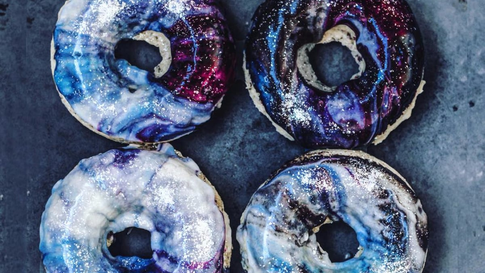

Go Back Home
Galactic Galaxy Donuts

Description
Embark on an interstellar journey with these mesmerizing Galactic Galaxy Donuts. Inspired by the cosmos and loved by jedis and smugglers alike, these ethereal treats are coated in shimmering glaze and stardust sprinkles. Whether you're on Tatooine or Earth, these donuts will take your taste buds to another galaxy.
Ingredients
- 2 cups all-purpose flour
- 1/2 cup granulated sugar
- 1 teaspoon baking powder
- 1/2 teaspoon baking soda
- 1/4 teaspoon salt
- 1/2 cup buttermilk
- 1/4 cup unsalted butter, melted
- 1 large egg
- 1 teaspoon vanilla extract
- Food coloring (blue, purple, pink)
- Edible glitter or star-shaped sprinkles
Steps
- Preheat the oven to 350°F (175°C). Grease a donut pan.
- In a bowl, whisk together flour, sugar, baking powder, baking soda, and salt.
- In another bowl, whisk buttermilk, melted butter, egg, and vanilla extract.
- Combine wet and dry ingredients, mixing until just combined.
- Divide the batter into separate bowls and add food coloring to create galaxy colors.
- Spoon spoonfuls of colored batter into the donut pan, layering different colors.
- Swirl the colors gently with a toothpick for a galaxy effect.
- Bake for 12-15 minutes until a toothpick comes out clean.
- Let the donuts cool, then dip in glaze and sprinkle with edible glitter or star-shaped sprinkles.
Go Back Home
Back to top